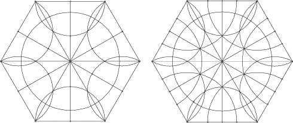

Step 4
| Use the symmetry of the diagram to fill in the rest of the first stage. |
| Draw all circles with centers the midpoints of a side and passing through the endpoints of the side. |
| Also draw all circles with center a vertex of the hexagon and radius determined by the intersection of the circles just drawn with the perpendicular bisectors of the sides. |
|  |
| Left: All the arcs of circles with center the midpoint of a side. Right: All the arcs with center a vertex of the hexagon. |
Return to construction.